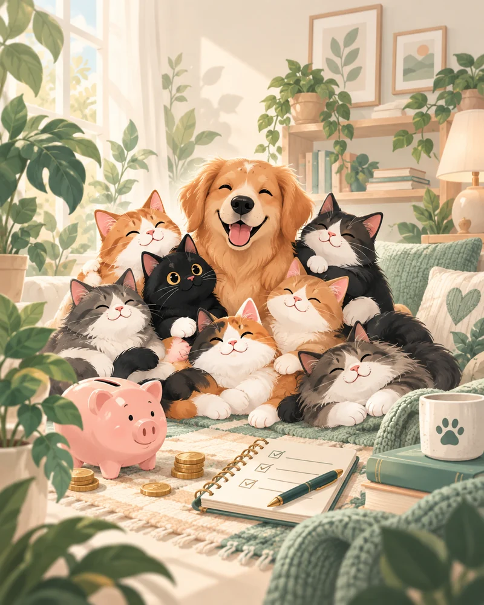
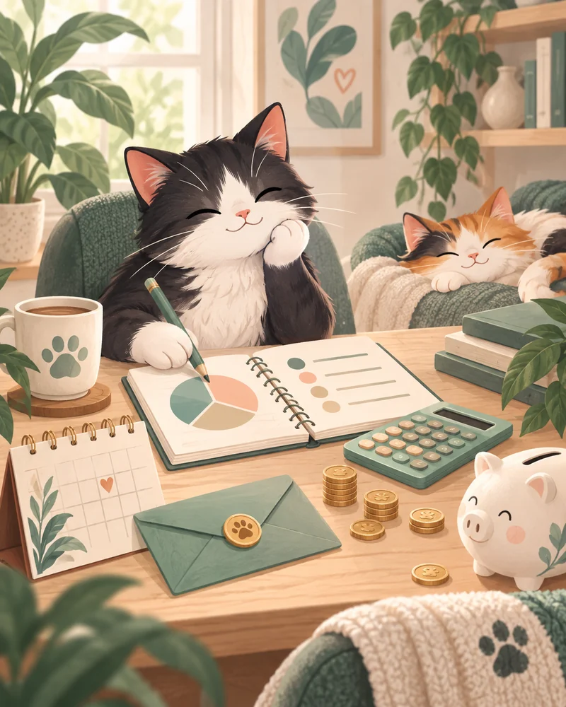
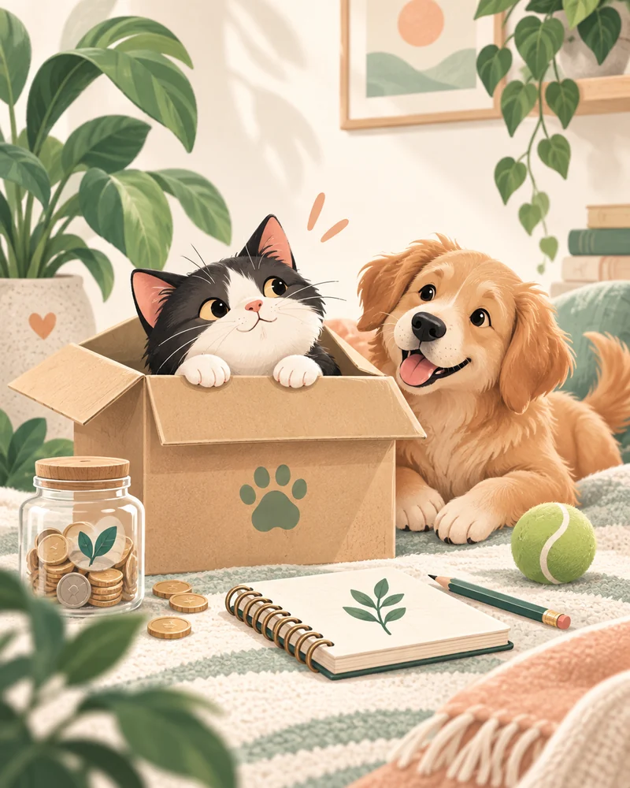
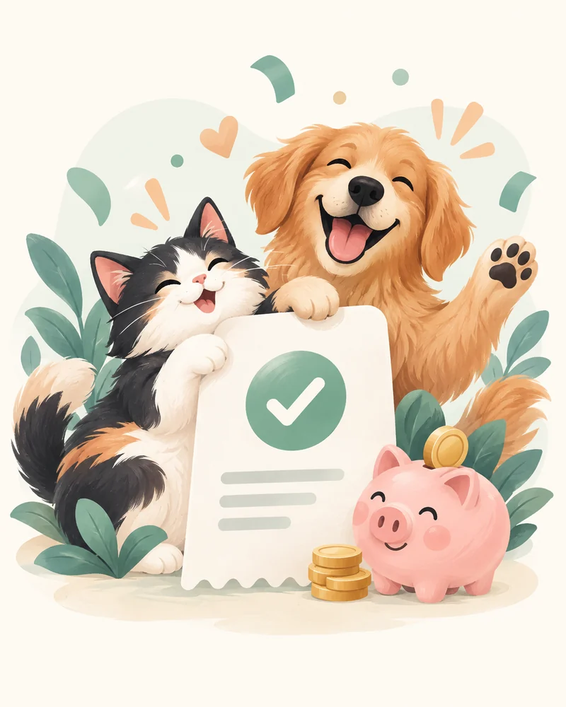
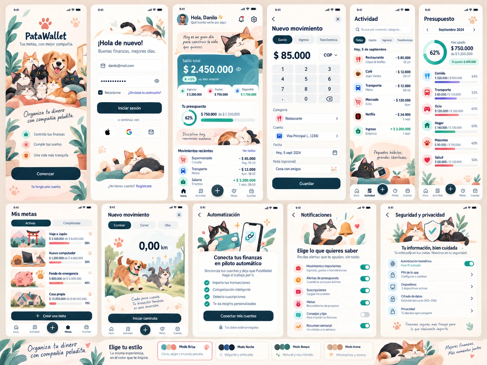
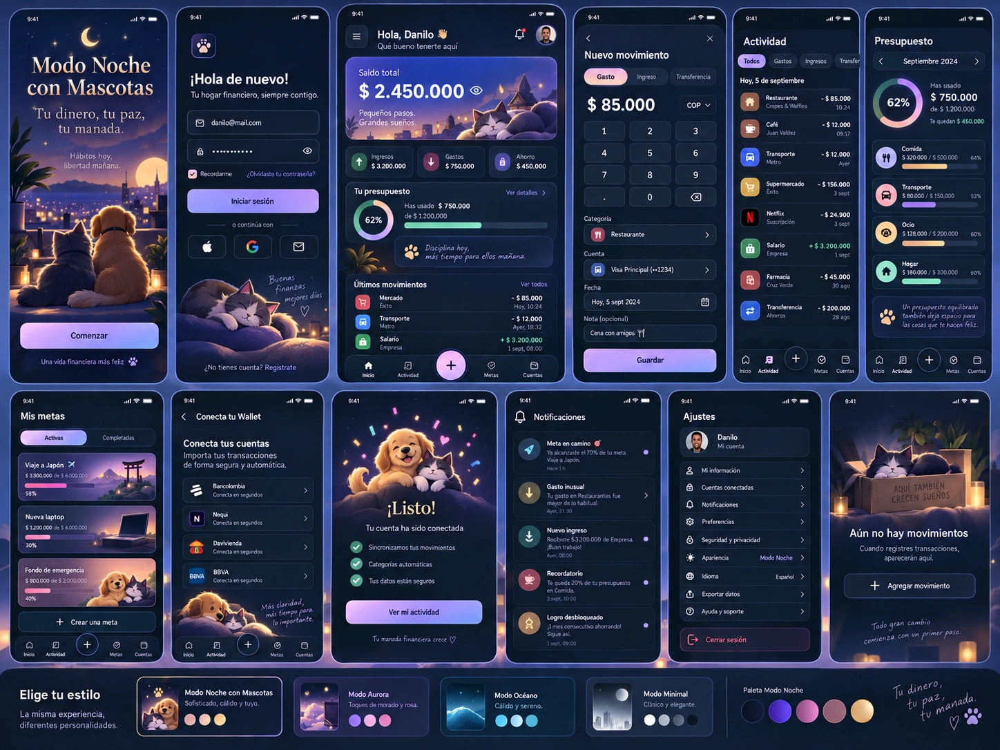
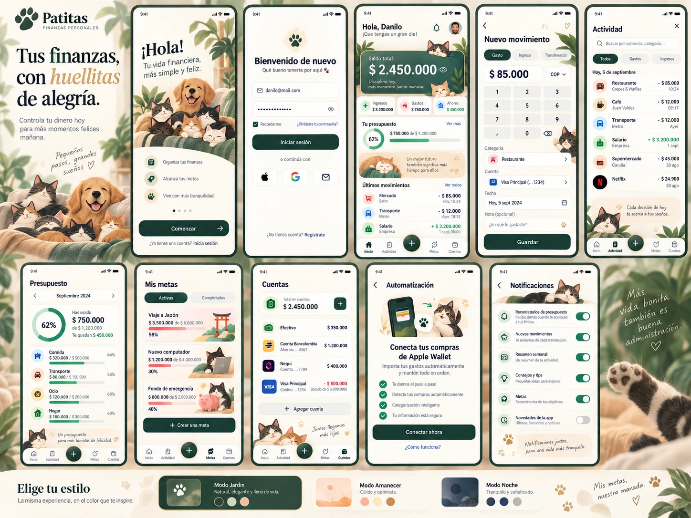

Estas cuatro ilustraciones son estáticas, opacas y aplanadas. No incluyen ojos, patas o colas separados. El paquete no contiene un atajo publicado ni conexiones activas.
Las cuatro ilustraciones
Tres tamaños por escena · sin descargas externas
{kind=link}
{kind=link}
{kind=link}

{kind=link}
{kind=link}
{kind=link}

{kind=link}
{kind=link}
{kind=link}

{kind=link}
{kind=link}
{kind=link}
Referencias de interfaz
Inspiración visual, no funcionalidades certificadas

light-patawallet
Referencia principal de composición clara. Corregir la pantalla accidental de caminata, cifras y promesas de integración/seguridad; no copiar esas funciones.

night-pets
Referencia de modo noche: azul tinta y lavanda. No copiar conexiones bancarias directas ni estados ficticios de sincronización.

botanical-pets
Referencia secundaria de mascotas y calidez. No impone el verde como color principal: el usuario rechazó una propuesta anterior por su paleta.
Del diseño a una app real
Primero revisar una versión local con datos de ejemplo. Después, incorporar acceso y datos reales, notificaciones y la plantilla de Atajos. Los documentos especifican qué implementar y cómo verificarlo.
Empezar aquíInstrucciones del proyectoMensajes para siguientes fasesRecursos pendientes